Navigatrix auf Deutsch Installieren und Einrichten
Dieses Dokument beschreibt die Installation von Navigatrix 0.5 auf der Festplatte eines Rechners. Zusätzlich werden die Schritte erläutert, die im Anschluss an die Installation erforderlich sind, um Navigatrix in deutscher Sprache zu konfigurieren. Navigatrix lässt sich auch vollständig von einem USB-Stick oder einer SD-Karte starten und benutzen. In diesem Fall wird die Festplatte geparkt. Dies kann insbesondere auf See sinnvoll sein, um Beschädigungen an der Festplatte zu vermeiden oder als Backup-System im Falle eines Festplattenfehlers. Eine Installation auf Festplatte ist für den täglichen Gebrauch dennoch zu empfehlen, da das System von einer Festplatte im Vergleich zu einem USB-Laufwerk deutlich schneller startet und läuft.
Wer das englischsprachige Navigatrix 0.5 bereits auf der Festplatte installiert hat, kann direkt zu Navigatrix auf Deutsch Einrichten gehen.
Navigatrix auf Festplatte Installieren
Mit einem boot-fähigen Navigatrix USB-Stick/SD Karte oder DVD ist die Installation auf der Festplatte in den allermeisten Fällen unkompliziert. Navigatrix lässt sich neben einem bestehenden Betriebssystem installieren (in vielen Fällen Windows als das System, mit dem der Rechner ausgeliefert wurde), so dass man anschliessend zu Beginn des Bootprozesses jeweils auswählen kann, unter welchem System man den Rechner starten möchte.
Für die Installation muss der Rechner zunächst vom Navigatrix USB-Stick/SD Karte gestartet werden. Um den Rechner von einem USB-Laufwerk statt von Festplatte zu starten, muss man ggf. unmittelbar nach Einschalten des Rechners eine Funktionstaste drücken, um die Bootreihenfolge zu ändern (USB-Laufwerk vor Festplatte). Bei den meisten Rechnern wird hierzu zu Beginn des Bootvorgangs für einige Sekunden “Press <F2> to enter setup” oder ähnlich in der Statusleiste am unteren Rand des Bildschirms angezeigt, bevor das Betriebssytem hochfährt.
Sobald Navigatrix hochgefahren ist, sollte oben links auf dem Desktop ein Anwendungssymbol mit dem Titel “Harddisk install option” zu sehen. Der Installations vorgang wird durch Doppelklick auf dieses Symbol gestartet.
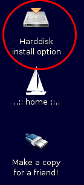
Das Installationsprogramm führt dann durch die Schritte der Festplatteninstallation.
Zunächst lässt sich die Sprache auswählen, die für den Installationsvorgang verwendet wird (Anmerkung: dies ist nicht die Sprache, in der das System nach abgeschlossener Installation läuft, sondern lediglich die Sprache, die für die Installationsdialoge verwendet wird)
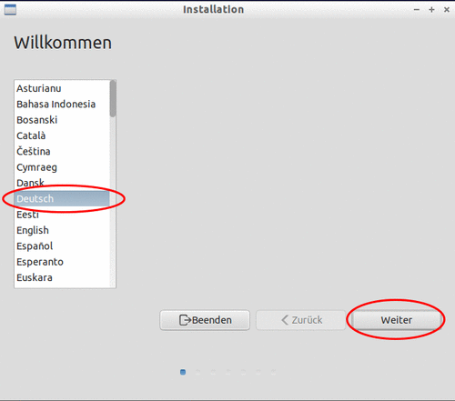
Als nächstes erscheint ein Formular, das prüft, ob die Voraussetzungen für die Installation erfüllt sind.
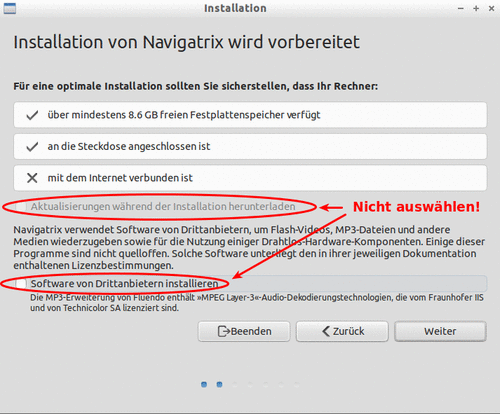
Wichtig: Entgegen der Empfehlung auf dem Formular sollte der Rechner während der Installation nicht mit dem Internet verbunden sein. Zusätzlich sollten die Optionen zum Herunterladen von Aktualisierungen und Software von Drittanbietern nicht ausgewählt werden. Diese Aktualisierungen sind für den Betrieb von Navighatrix nicht erforderlich. Nebem dem unnötigen Verbrauch von ggf. knapper Netzwerkbandbreite können unkontrollierte Aktualisierungen im ungünstigsten Fall dazu führen, das Komponenten des Systems nicht mehr reibungslos miteinander funktionieren. Die in Navigatrix enthaltenen Softwarekomponenten und deren Versionsstände sind sorgfältig aufeinander abgestimmt, um einen stabilen Betrieb untereinanden und mit externen Komponenten wie GPS, AIS, Pactor usw. zu gewährleisten. Bei Softwareversionen bedeutet “neuer” häufig nicht “besser”, was Fehleranfälligkeit und Stabilität angeht. Falls erforderlich oder gewünscht, können einzelne Komponenten nach abgeschlossener Installation gezielt und kontrolliert aktualisert werden.
Falls sich ein Wireless Netzwerk in der Nähe befindet, wird als nächstes gefragt, ob der Rechner sich für die Installation mit diesem verbinden soll. Auch hier gilt wieder: Keine Verbindung während der Installation aus den oben genannten Gründen.
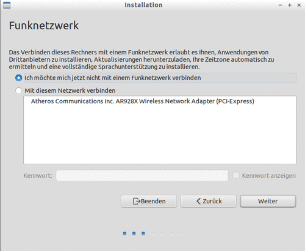
Jetzt geht's ans Eingemachte und es wird festgelegt, wie Navigatrix installiert werden soll.
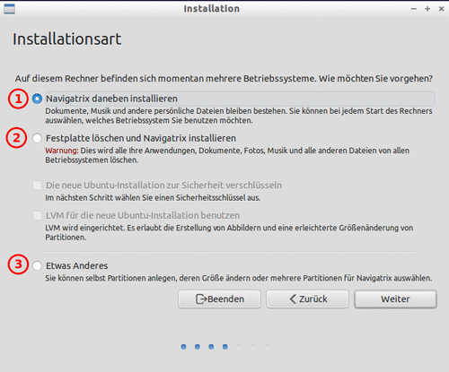
Im einfachsten Fall wird die gesamte Festplatte gelöscht und Navigatrix wird als einziges Betriebssystem auf dem Rechner installiert (Option 2). In den meisten Fällen wird jedoch gewünscht, Navigatrix neben einem bestehenden Betriebssytem (z.B. Windows, oder einer andere Linux-Version) zu installieren, so dass man anschliessend jeweils beim Start des Rechners auswählen kann, unter welchem Betriebssystem der Rechner hochfahren soll. Dies ist unter den Optionen (1) und (3) möglich. Unter Option (1) wird automatisch eine neue Partition auf der Festplatte für Navigatrix angelegt, während man unter Option (3) auswählen kann, in welche bereits bestehende Partition Navigatrix installiert werden soll. Zusätzlich lassen sich unter Option (3) einzelne Zweige des Dateisystems in unerschiedlichen Festplattenpartitionen installieren. Dies kann sinnvoll sein, um z.B. den home Verzeichnisbaum getrennt vom eigentlichen Betriebssytem abzulegen, so dass beim Wechsel auf ein neueres Navigatrix Release in der Zukunft die Dateien des Anwenders erhalten bleiben.
Im Folgenden wird zunächst die einfachere Option (1) beschrieben. Diese ist ausreichend, wenn auf dem Rechner bisher lediglich ein anderes Betriebssystem vorhanden ist. Anwender, die bereits mehrere Betriebssysteme auf ihrem Rechner haben und/oder mit der Einrichtung und Verwaltung von Festplattenpartitionen vertraut sind, sollten Option (3) auswählen, die weiter unten beschrieben wird.
Zunächst also das weitere Vorgehen für Option (1), “Navigatrix daneben installieren”. Hier muss im nächsten Formular lediglich ausgewählt werden, wieviel Platz auf der Festplatte für Navigatrix reserviert werden soll:
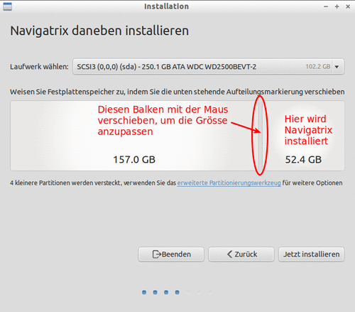
Wie in der Abbildung gezeigt, kann in diesem Formular der Balken, der die bestehende Partition von der für Navigatrix neu einzurichtenden Partition trennt, mit der Maus verschoben werden, um das Größenverhältnis der beiden Partitionen anzupassen. Sofern Musik-, Bild- und Videodateien auf der bereits bestehenden Partition verbleiben sollen, dürften 40-50GB für Navigatrix großzügig genug angelegt sein, um Seekarten, Email, elektronische Bibliothek, eine komprimierte Offline-Version von Wikipedia und andere Anwenderdateien zu speichern. Im Zweifelsfall sollte man dies noch mal überschlagsmäßig unter Kenntnis des eigenen Bedarfs abschätzen. Das eigentliche Betriebssystem schlägt bei Navigatrix mit knapp 6GB zu Buche, so dass der Rest für Anwenderdateien (inkl. Seekarten, Email usw.) zur Verfügung steht. Auf Dateien in einer bereits bestehenden Windows Partition kann man von Navigatrix aus zugreifen. Umgekehrt ist dies allerdings nicht der Fall (d.h. von Windows aus hat man i.d.R. keinen Zugriff auf Dateien, die in der Navigatrix Partition abgelegt werden).
Für Option (1), “Navigatrix daneben installieren”, ist dies bereits alles und es geht weiter unten mit Schritt 4 weiter. Hat man Option (3), “Etwas anderes”, ausgewählt, sind einige zusätzliche Schritte erforderlich.
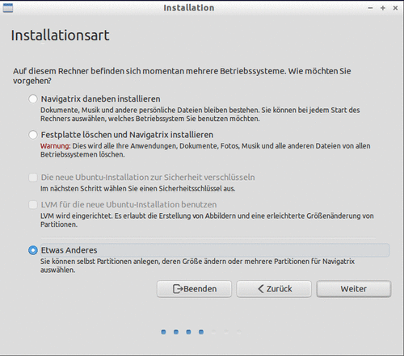
Für diese Optione sollte man am besten vor Beginn des Installationsvorgangs die Festplattenpartitionen so einrichten, wie man sie für die Installation benötigt. In Navigatrix selbst steht dazu GParted als Werkzeug zur Verfügung (im Anwendungsmenu am unteren linken Bildschirmrand unter Preferences -> Partition Editor). Wir gehen hier davon aus, dass der Anwender, der Option (3), Etwas anderes, auswählt, mit diesen Werkzeugen vertraut ist und erklären sie daher hier nicht weiter (die GParted Anwendung enthält außerdem eine ausführliche - allerdings englischsprachige - Hilfe).
Es lassen sich so z.B. drei Partitionen für die Navigatrix-Installation anlegen:
Eine etwa 10GB große Partition für das eigentliche Betriebssystem samt Anwendungen (einschließlich etwas Reserve, falls man z.B. später zusätzliche Anwendungen installieren möchte). Als Dateisystem hierfür “ext4” auswählen.
Eine Swap-Partition zur Auslagerung von Hauptspeicheroperationen, falls selbiger ausgeht. Dies ist nur erforderlich, sofern es nicht bereits eine bestehende linux-swap Partition auf der Festplatte gibt (in GParted als solche erkennbar). 4GB sollten hierfür großzügig bemessen sein.
Der Rest an verfügbarer Plattenkapazität wird dem Anwender home Verzeichnis zugeschlagen und steht für Anwender- und Konfigurationsdateien zur Verfügung. Als Dateisystem hierfür ebenfalls “ext4” auswählen.
Diese Aufteilung erlaubt, bei einem evtl. späteren Releasewechsel von Navigatrix lediglich das eigentliche System neu in die oben erstgenannte Partition zu installieren, dabei aber alle Anwender- und Konfigurationsdateien unter home beizubehalten.
Hat man die erforderlichen Partitionen eingerichtet und dann im oben gezeigten Formular “Installationsart” die dritte Option Etwas anderes ausgewählt, gelangt man zu folgendem Formular:
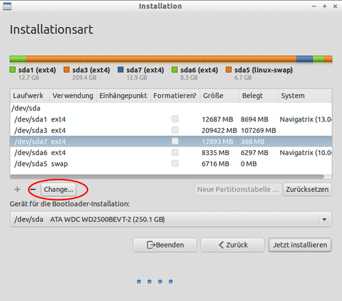
Hier lässt sich nun festlegen, in welche Partitionen die einzelnen Systembestandteile installiert werden sollen. Dazu unter “Laufwerk” jeweils die enstprechende Partition auswählen und auf die Schaltfläche Change klicken. Dies öffnet ein weiteres Dialogfenster, in dem die Einstellungen für die jeweilige Partition vorgenommen werden können:
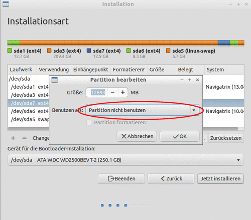
Sofern die Partionen bereits zuvor mit der richtigen Größe angelegt wurden, kann die hier in MB angezeigte Größe unverändert bleiben. Man braucht also lediglich Unter Benutzen als: die Liste aufklicken und in der sich öffnenden Auswahl das richtige Dateisystem markieren.
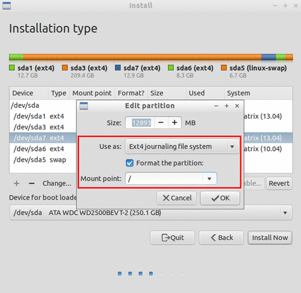
Zusätzlich muss in dem sich neu öffnenden Feld Mount point festgelegt werden, was in dieser Partition installiert werden soll. Für das eigentliche Betriebssystem samt Anwendungen ist das Root-Verzeichnis (“/”) auszuwählen, für das home Verzeichnis “/home”. Bei Bedarf kann man die Partition zusätzlich neu formatieren lassen.
Nachdem man diese Einstellungen vorgenommen hat, erscheint eine Warnung, dass diese Änderungen zunächst zur Festplatte zurückgeschrieben werden müssen.
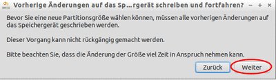
Klickt man auf Weiter erscheint nochmals die Partitionsübersicht, auf der man jetzt Jetzt installieren anklicken kann.
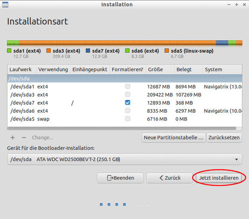
Als nächstes wählt man seinen Standort aus, der für regionale Einstellungen wie Datum, Uhrzeit, Zahlen- und Währungsformate benutzt wird.
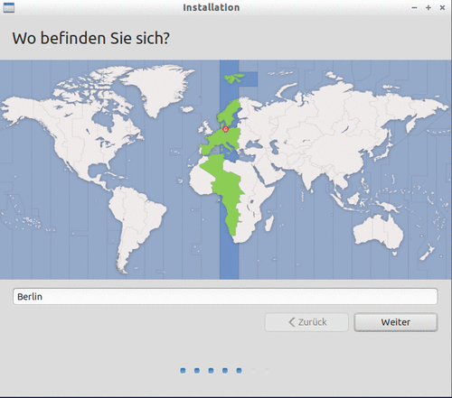
Weiter geht's mit der Auswahl der Tastaturbelegung.
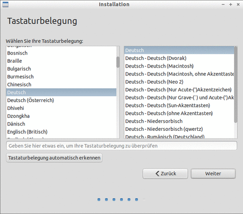
Wichtig: Bei diesem Schritt aufpassen und am besten die ausgewählte Belegung in dem entsprechenden Eingabefeld durch die Eingabe einiger Sonderzeichen überprüfen. Im nächsten Schritt wird nämlich ein maskiertes Passwort eigegeben. Wenn dieses Sonderzeichen enthält und diese mit falscher Tastaturbelegung eingegeben werden, hat man i.d.R. kaum eine Chance, dieses Passwort später zu rekonstruieren.
Schliesslich sind noch einige Angaben zu Benutzername und Passwort erforderlich.
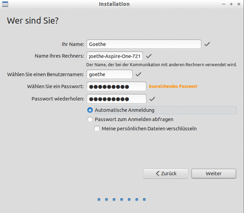
Auch, wenn man hier “Automatische Anmeldung” auswählt, sollte man sich das gewählte Passwort unbedingt merken, da sich später im System administrative Funktionen nur mit diesem Passwort ausführen lassen.
Das war's! Nachdem man im letzten Formular auf Weiter gekilckt hat, läuft die Installationsmaschinerie an und kleine Dialogfenster informieren über den Fortgang.
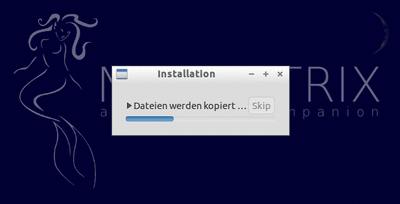
Nachdem dies alles seinen geordneten Gang genommen hat, erscheint ein Dialogfenster, dass "Ich habe fertig!" verkündet
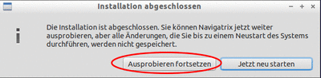
Hier empfiehlt es sich Ausprobieren fortsetzen" auszuwählen, da es sonst bei einem unmittelbaren Neustart unter Umständen schwierig ist, den USB-Stick oder die SD-Karte genau im richtigen Moment zu entfernen, bevor der Rechner erneut von dieser statt von der Festplate startet.
Navigatrix auf Deutsch Einrichten
*** Note: Ab Navigatrix Version 0.5 vom September 2013 ist das deutsche Sprachpaket bereits in der Installation enthalten. Ab dieser Version muss ggf. lediglich die Spracheinstellung geändert werden, es müssen aber keine zusätzlichen Pakete heruntergeladen und installiert werden. Die nachfolgende Anleitung gilt also für Navigatrix 0.4 sowie die 0.5 Versionen vom Juli und August 2013.
Um mit Navigatrix weitestgehend in Deutsch zu arbeiten, muss nach erfolgter Festplatteninstallation die deutsche Sprachunterstützung installiert und aktiviert werden (Wörterbuch, Thesaurus, Hilfedateien, Anpassung von Datums-, Zahlen- und Währungsformaten). Damit wird die eigentliche Arbeitsumgebung auf Deutsch umgestellt. Es hängt dann jeweils noch von der einzelnen jeweils benutzten Anwendung ab, ob diese ebenfalls Deutsch unterstützt und die Anwendungsmenüs, -hilfe usw. in Deutsch erscheinen. Dies ist z.B. für die Gnumeric Tabellenkalkulation, den Firefox Web-Browser und das Sylpheed Email-Programm der Fall. Die Airmail-Anwendung ist jedoch z.B. - wie auch unter Windows - weiterhin nur in Englisch verfügbar, ebenso wie einige kleinere Anwendungen zur Unterstützung von Navigation und Kommunikation.
Wer häufig auf Befehlszeilenebene in der Konsole arbeitet und die deutschen "man pages" des Unix Systems vorzieht, kann diese zusätzlich zu den beiden oben angeführten Schritten installieren (in dieser Anleitung nicht weiter erläutert).
Nun aber zu den Details.
Installieren und Aktivieren der deutschen Sprachunterstützung
Hierzu ist eine Internetverbindung mit ausreichendem “Durchmesser” erforderlich, da bei diesem Schritt ca. 75MB zusätzliche Daten heruntergeladen werden. Die einzelnen Schritte für das Installieren und Aktivieren der deutschen Sprachunterstützung werden im Folgenden kurz beschrieben.
Im Manta-MenüPreferences -> Language Support auswählen.
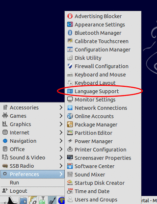
Das System prüft dann zunächst, ob für die bereits installierten Sprachen (Englisch, Spanisch und Französisch) alle Komponenten vorhanden sind.
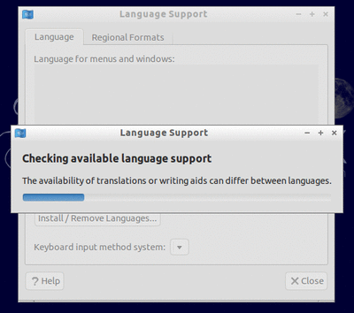
Als Ergebnis der Überprüfung wird angezeigt, dass die Sprachunterstützung für die bereits installierten Sprachen nicht vollständig ist.
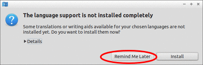
Hier kann man getrost “Remind me later"” anklicken, da ansonsten noch größere Datenmengen für die bereits installierten Sprachen heruntergeladen werden. Insbesondere die umfangreichen Hilfe-Dateien für das Bildbearbeitungsprogramm GIMP in Spanisch und Französisch sind im Navigatrix Lieferumfang nicht enthalten, und man kann sich das Herunterladen dieser Dateien hier sparen.
In den dann sichtbaren Formular werden die bereits installierten Sprachen angezeigt.
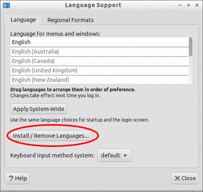
Ein Klick auf Install/Remove Languages... bringt eine Auswahlliste zur Anzeige, in der man durch Anklicken der Box rechts eine oder mehrere neue Sprachen zur Installation makieren kann.
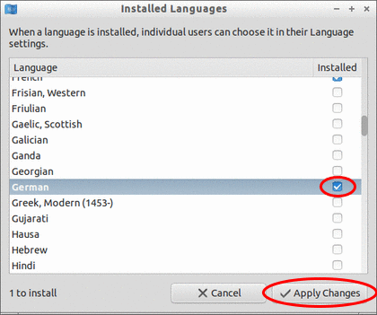
Nachdem man hier Deutsch ausgewählt hat, klickt man Apply Changes, woraufhin man zunächst zur Eingabe seines Administrationspassworts aufgefordert wird.
Wenn man nach erfolgter Passworteingabe auf die Authenticate Schaltfläche klickt, startet das Herunterladen der deutschen Sprachpakete und deren anschliessende Installation. Ein Formular informiert über den Fortschritt des Ganzen.
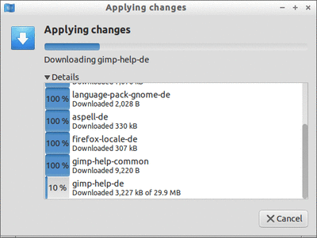
Sobald die Installation abgeschlossen ist, erscheinen im Formular “Language Support” nun auch die Einträge für Deutsch. Damit steht nun z.B. die Deutsche Rechtschreibprüfung im Textverarbeitungsprogramm zur Verfügung.
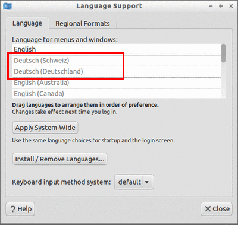
Um die Arbeitsoberfläche und Anwendungsmenüs standardmäßig auf Deutsch umzustellen, muss der entsprechende "Deutsch" Eintrag in der Liste noch mit der Maus an die oberste Stelle, über “Englisch” gezogen werden.
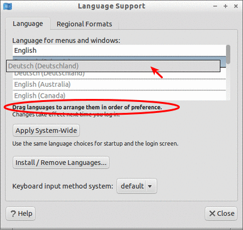
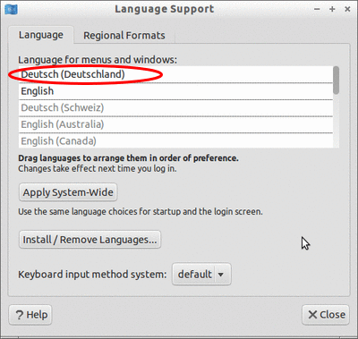
Anschließend klickt man noch auf die Schaltfläche Apply System-Wide (erfordert erneute Passworteingabe).
Schließlich muss man sich noch einmal aus- und wieder einloggen, damit die vorgenommenen Änderungen wirksam werden (ansonsten ist dies beim nächsten Neustart des Rechners der Fall). Bei der Neuanmeldung wird man gefragt, ob man die Standardordner in seinem home Verzeichnis in die jeweiligen deutschen Bezeichnungen umbenennen möchte.
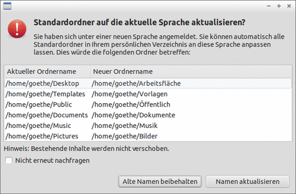
Wählt man hier Namen aktualisieren aus, muss man berücksichtigen, dass die Lesezeichen, die links im Dateimanager angezeigt werden, dann auf die alten bzw. nicht mehr existente Ordnernamen verweisen und manuell gelöscht und neu angelegt werden müssen. Zusätzlich müssen ggf. bestehende Dateien aus den alten in die neuen Ordner verschoben werden.
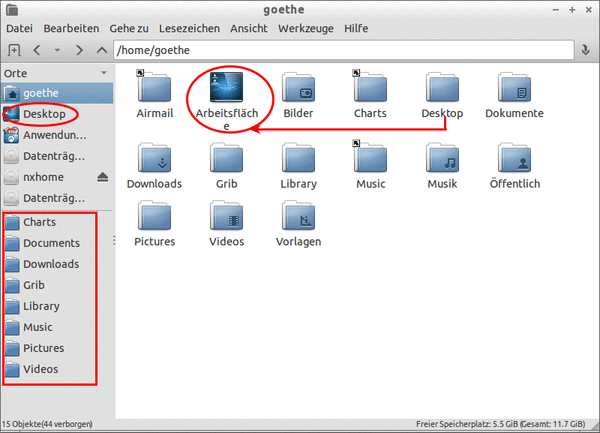
Das war's. Im Manta Menü erscheinen nun deutsche Anwendungskategorien.
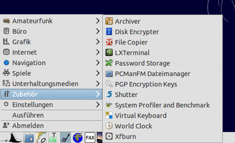
Sofern die jeweiligen Anwendungen dies Unterstützen, erscheinen Menüs und Benutzerführung innerhalb der Anwendungen ebenfalls in Deutsch, wie hier am Beispiel der Tabellenkalkulation Gnumeric gezeigt.